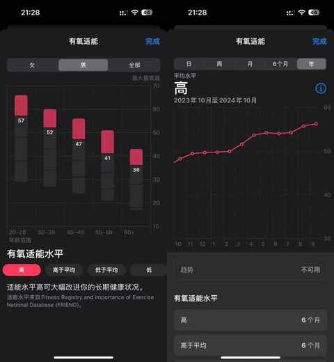
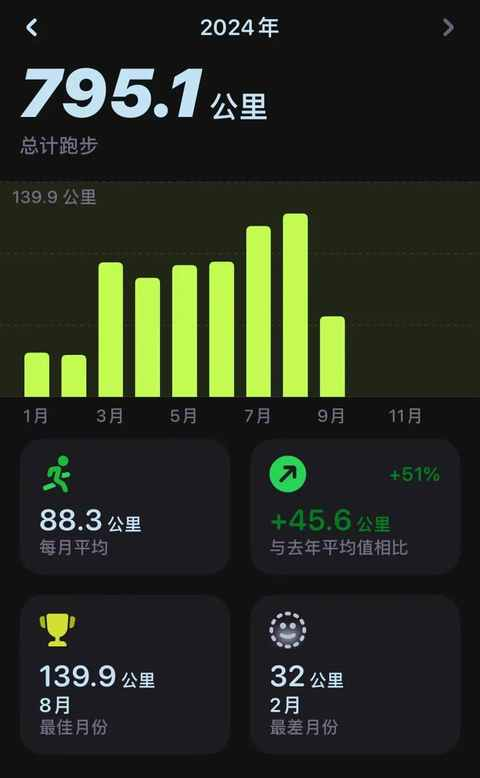
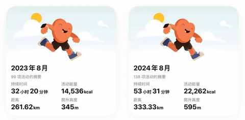
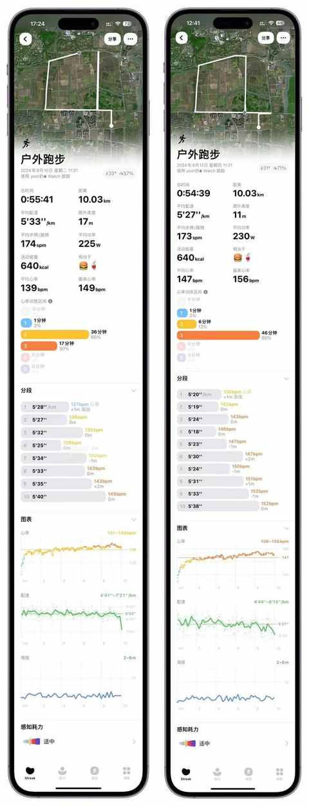
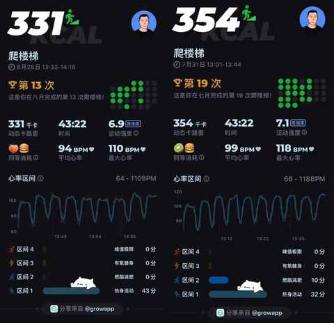
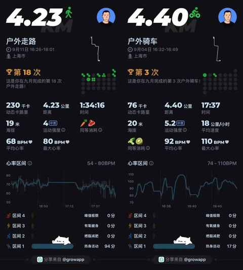
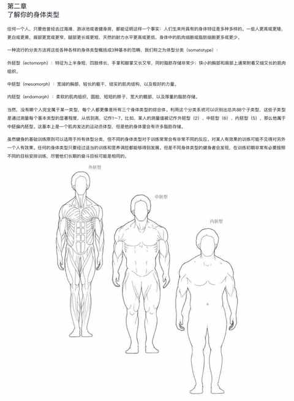

生活日常之：把运动融入其中
最近的天气依然是有一些热，不过温湿度已趋近于友好（相对七八月份），可以说又到了能随时出门跑步或骑行的好时候。
伺机而动和规律运动早已经成为雷打不动的习惯之一，从尝试把运动融入到日常生活中到运动早已成为日常。
一、为什么要运动？
1️⃣ 身体是最大最基本的本钱！
长期规律运动能让体重保持在正常水平，也能让体力体能维持在较好水准。

2️⃣ 实在是美食不可辜负！！
在 B 站和抖音上都关注了不少美食博主，探店博主，全国各地好吃的可太多太多了，不能光看不吃啊！
3️⃣ 运动就是生活日常！！！
运动于我而言，早已是生活中不可或缺的一部分，运动和一日三餐一样重要，可以有规律无负担的进行。


二、如何把运动融入日常？
1️⃣ 抓住工作的间隙
① 充分发挥居家办公，工作任务自行安排和时间灵活的优势 ② 减少无意义的刷 B 站、微博、论坛、玩手机的时间
本周二和今天上午 11 点多完成当天的工作内容之后，都出去跑步 10km，路线是家附近常跑的一个路段，一圈大约是 8km，骑行也会沿用这条路线，刷圈的好处是能规避等待红绿灯对运动过程连续性的干扰。

跑完之后，第一时间拉伸，步行或骑共享单车到小区，回家后：先补水+补充电解质，休息 10 来分钟后准备午饭。
2️⃣ 饭后也能动一动
① 比较适合的时间是午饭和晚饭后 ② 骑行、散步、快走、爬楼梯均可
7 月和 8 月份温度偏高，白天不适合骑行和跑步，采取的应对方式是把运动形式调整为：爬楼梯。

如果哪天你吃了一顿大餐有点撑的话，个人亲测能最快缓解的方式是：骑行，扫个共享单车骑个 20 分钟。
3️⃣ 通勤即运动
虽然是居家办公，但娃开学之后，我也有了通勤时间，送去学校基本都是开车或者骑小电驴，不过从学校接回来的时候偶尔会骑自行车和步行，

4️⃣ 灵活安排运动时间和类型
以往 送娃到辅导班（兴趣班）之后： 找一个位置坐下来玩手机，玩到下课。 现在 送娃辅导班（兴趣班）之后：根据下课的时间，决定是去跑 5km、8km、10km 或是骑行、走路等等。
依据自身的运动偏好去选择不同的运动类型，尝试多次之后能确定哪种方式更适合当下境况。
5️⃣ 道路千万条，安全第一条
运动有风险，特别是刚开始尝试或者是停止运动有一段时间再重启的时候，身体和心理都需要时间适应，要避免受伤，注意心跳和呼吸，感到异常就停下休息。
骑行需佩戴好头盔。
夜间跑步尽量去有路灯的路段。
雷雨天台风天不到户外运动。
高温天气注意防暑在室内运动。
……
三、踩过哪些坑？
1️⃣ 运动健康常识缺失
想快速补充运动健康方面的知识，有两个快速高效的方式：
1）咨询专业人士
健身房的教练、各平台的健身博主、朋友圈的运动达人等等
2）阅读相关书籍
经典的运动健康方面的书籍就那几本，多个平台都能检索到。
例如在《施瓦辛格健身全书》中有关于不同身体类型的介绍：

2️⃣ 热身、拉伸和运动同样重要
运动前热身：能让运动状态更好，同时能减少受伤风险
运动后拉伸：能有效放松肌肉，缓解肌肉疲劳
3️⃣ 逐步提升运动量
通过对运动强度和时间的控制，让身体能有适应调整的时间，超负荷运动后的肌肉酸疼感绝对能让你追悔莫及。
4️⃣ 适合自己最重要
在了解人在运动方面的共性基础上，要充分理解并接受个体差异。
四、最重要的是什么？
选一个能坚持下去的运动：动起来！！！
刚开始设置每天 10-15 分钟，在某一个固定的时间段和位置，后面慢慢到 20-40分钟。
再简单一些的方式：先完成每天 8000 步，连续一周。
不论你采取何种方式，主要坚持下来，相信随着 时间的推移，你能越来越感受到运动 的复利。